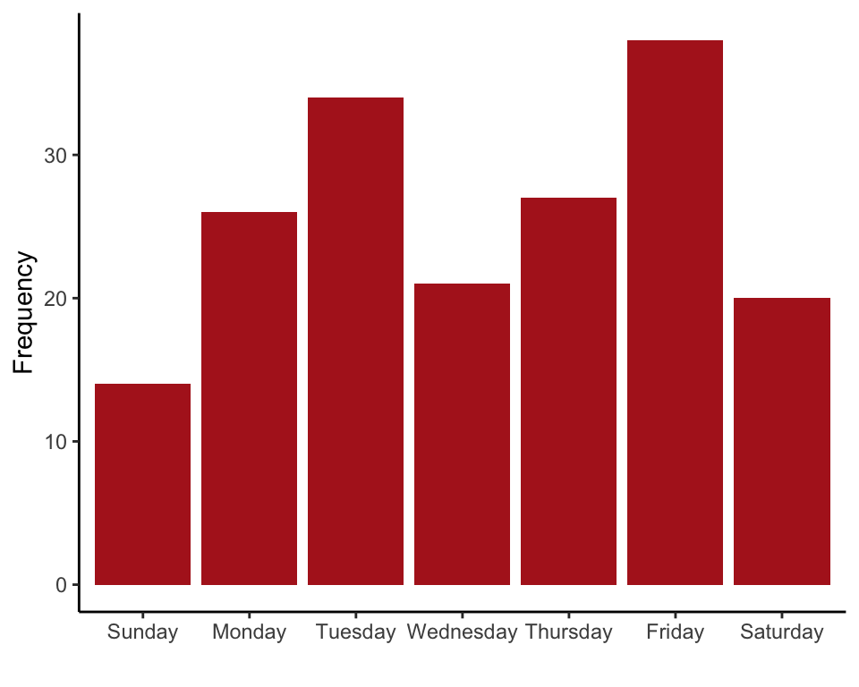
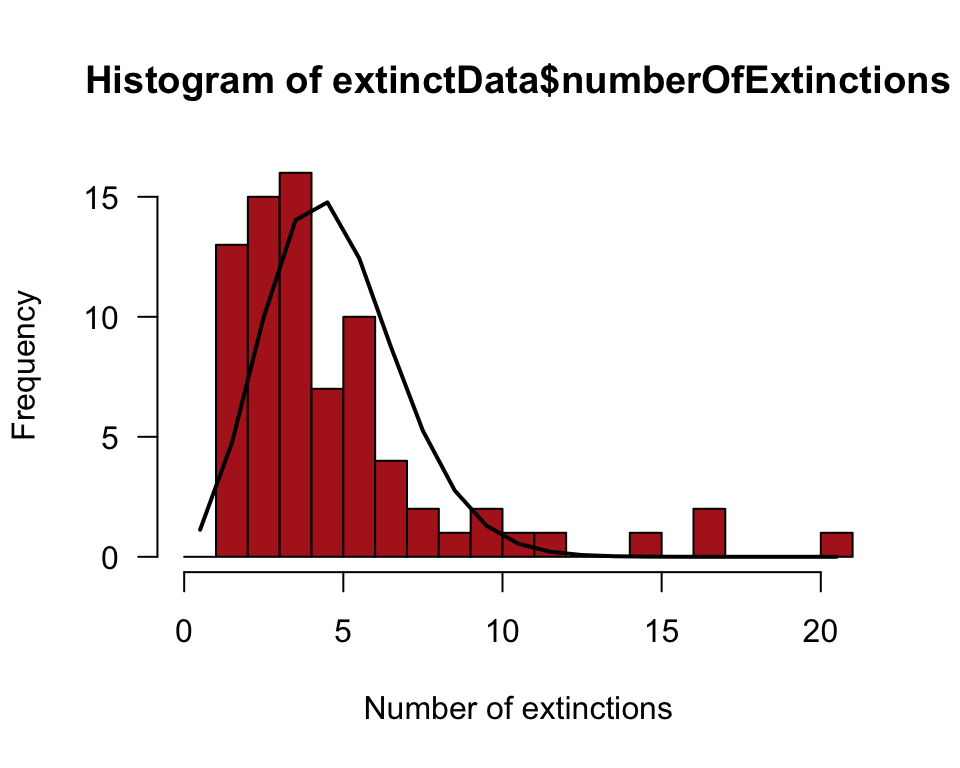

R code for examples in Chapter 8:
Fitting probability models to frequency data
We used R to analyze all examples in Chapter 8. We put the code here so that you can too.
Also see our lab on analyzing frequency data using R.
New methods on this page
These are the core commands that produce the new methods described in Chapter 8. The variable names are plucked from the examples further below.
-
\(\chi^2\) goodness-of-fit test:
chisq.test(birthDayTable, p = c(52,52,52,52,52,53,53)/366)) -
Calculate Poisson probabilities:
dpois(0:20, lambda = meanExtinctions) -
Other new methods:
-
Divide individuals into groups based on a numeric variable using
cut().
-
Divide individuals into groups based on a numeric variable using
Load required packages
We’ll use the ggplot2 add-on package to draw many plots.
library(ggplot2)Example 8.1. No weekend getaway
Fit the proportional model to frequency data.
Read and inspect the data
Each row represents a single birth, and shows the day of the week of birth.
birthDay <- read.csv(url("https://whitlockschluter3e.zoology.ubc.ca/Data/chapter08/chap08e1DayOfBirth2016.csv"), stringsAsFactors = FALSE)
head(birthDay)## day
## 1 Friday
## 2 Monday
## 3 Thursday
## 4 Tuesday
## 5 Friday
## 6 FridayPut the days of the week in the correct order for tables and graphs.
birthDay$day <- factor(birthDay$day, levels = c("Sunday", "Monday",
"Tuesday", "Wednesday","Thursday","Friday","Saturday"))Frequency table
Tabulate the numbers of births on each day of the week (Table 8.1-1).
birthDayTable <- table(birthDay$day)
addmargins(birthDayTable)##
## Sunday Monday Tuesday Wednesday Thursday Friday Saturday
## 14 26 34 21 27 38 20
## Sum
## 180Bar graph
This produces a graph like that in Figure 8.1-1.
ggplot(birthDay, aes(x = day)) +
geom_bar(stat="count", fill = "firebrick") +
labs(x = "", y = "Frequency") +
theme_classic()
\(\chi^2\) goodness-of-fit test
The vector \(p\) is the expected proportions rather than the expected frequencies, and they must sum to 1 (R nevertheless uses the expected frequencies when calculating the \(\chi^2\) statistic).
chisq.test(birthDayTable, p = c(52,52,52,52,52,53,53)/366)##
## Chi-squared test for given probabilities
##
## data: birthDayTable
## X-squared = 15.795, df = 6, p-value = 0.0149Example 8.3. Gene content
Goodness-of-fit of the proportional model to data with two categories.
Read and inspect the data. Each row is a different gene with its chromosome indicated.
geneContent <- read.csv(url("https://whitlockschluter3e.zoology.ubc.ca/Data/chapter08/chap08e3GeneContentX.csv"), stringsAsFactors = FALSE)
head(geneContent)## name chr description
## 1 TSPAN6 X tetraspanin
## 2 TNMD X tenomodulin
## 3 DPM1 20 dolichyl-phosphate
## 4 SCYL3 1 SCY1
## 5 C1orf112 1 chromosome
## 6 FGR 1 FGRMake a new variable to indicate whether genes are on the X chromosome. Order the categories as desired for tables and graphs.
geneContent$XnotX <- geneContent$chr
geneContent$XnotX[geneContent$chr != "X"] <- "NotX"
geneContent$XnotX <- factor(geneContent$XnotX, levels = c("X","NotX"))Frequency table
The table shows the number of genes on the X and on other chromosomes.
geneContentTable <- table(geneContent$XnotX)
data.frame(addmargins(geneContentTable))## Var1 Freq
## 1 X 839
## 2 NotX 18789
## 3 Sum 19628\(\chi^2\) goodness-of-fit test
Test of the proportional model.
chisq.test(geneContentTable, p = c(1020.7, 18607.3)/sum(geneContentTable) )##
## Chi-squared test for given probabilities
##
## data: geneContentTable
## X-squared = 34.12, df = 1, p-value = 5.183e-09Example 8.4. Mass extinctions
Goodness-of-fit of the Poisson probability model to frequency data on number of marine invertebrate extinctions per time block in the fossil record.
Read and inspect the data. Each row is a time block, with the observed number of extinctions listed.
extinctData <- read.csv(url("https://whitlockschluter3e.zoology.ubc.ca/Data/chapter08/chap08e4MassExtinctions.csv"), stringsAsFactors = FALSE)
head(extinctData)## numberOfExtinctions
## 1 1
## 2 1
## 3 1
## 4 1
## 5 1
## 6 1Frequency table
This table tallies the number of time blocks falling in each number-of-extinctions category. First make a new variable with number of extinctions as a factor so that missing categories are nevertheless included in the table (e.g., no time blocks have exactly 13 extinctions).
extinctData$nExtinctCategory <- factor(extinctData$numberOfExtinctions,
levels = c(0:20))
extinctTable <- table(extinctData$nExtinctCategory)
data.frame(addmargins(extinctTable))## Var1 Freq
## 1 0 0
## 2 1 13
## 3 2 15
## 4 3 16
## 5 4 7
## 6 5 10
## 7 6 4
## 8 7 2
## 9 8 1
## 10 9 2
## 11 10 1
## 12 11 1
## 13 12 0
## 14 13 0
## 15 14 1
## 16 15 0
## 17 16 2
## 18 17 0
## 19 18 0
## 20 19 0
## 21 20 1
## 22 Sum 76Mean number of extinctions
The mean number of extinctions per time block must be estimated from the data.
meanExtinctions <- mean(extinctData$numberOfExtinctions)
meanExtinctions## [1] 4.210526Expected frequencies
Calculate expected frequencies under the Poisson distribution using the estimated mean. Don’t forget that the Poisson distribution also includes the number-of-extinctions categories 21, 22, 23, and so on.
expectedProportion <- dpois(0:20, lambda = meanExtinctions)
expectedFrequency <- expectedProportion * 76Show the frequency distribution in a histogram (Figure 8.4-2). Superimpose a curve of the expected frequencies.
hist(extinctData$numberOfExtinctions, right = FALSE, breaks = seq(0, 21, 1),
xlab = "Number of extinctions", col = "firebrick", las = 1)
lines(expectedFrequency ~ c(0:20 + 0.5), lwd = 2) 
Table of frequencies
Make a table of observed and expected frequencies, saving results in a data frame (Table 8.4-3).
extinctFreq <- data.frame(nExtinct = 0:20, obsFreq = as.vector(extinctTable),
expFreq = expectedFrequency)
extinctFreq## nExtinct obsFreq expFreq
## 1 0 0 1.127730e+00
## 2 1 13 4.748338e+00
## 3 2 15 9.996501e+00
## 4 3 16 1.403018e+01
## 5 4 7 1.476861e+01
## 6 5 10 1.243672e+01
## 7 6 4 8.727524e+00
## 8 7 2 5.249639e+00
## 9 8 1 2.762968e+00
## 10 9 2 1.292616e+00
## 11 10 1 5.442596e-01
## 12 11 1 2.083290e-01
## 13 12 0 7.309790e-02
## 14 13 0 2.367543e-02
## 15 14 1 7.120431e-03
## 16 15 0 1.998718e-03
## 17 16 2 5.259783e-04
## 18 17 0 1.302733e-04
## 19 18 0 3.047328e-05
## 20 19 0 6.753081e-06
## 21 20 1 1.421701e-06The low expected frequencies will violate the assumptions of the \(\chi^2\) test, so we will need to group categories. Create a new variable that groups the extinctions into fewer categories.
extinctFreq$groups <- cut(extinctFreq$nExtinct,
breaks = c(0, 2:8, 21), right = FALSE,
labels = c("0 or 1","2","3","4","5","6","7","8 or more"))
extinctFreq## nExtinct obsFreq expFreq groups
## 1 0 0 1.127730e+00 0 or 1
## 2 1 13 4.748338e+00 0 or 1
## 3 2 15 9.996501e+00 2
## 4 3 16 1.403018e+01 3
## 5 4 7 1.476861e+01 4
## 6 5 10 1.243672e+01 5
## 7 6 4 8.727524e+00 6
## 8 7 2 5.249639e+00 7
## 9 8 1 2.762968e+00 8 or more
## 10 9 2 1.292616e+00 8 or more
## 11 10 1 5.442596e-01 8 or more
## 12 11 1 2.083290e-01 8 or more
## 13 12 0 7.309790e-02 8 or more
## 14 13 0 2.367543e-02 8 or more
## 15 14 1 7.120431e-03 8 or more
## 16 15 0 1.998718e-03 8 or more
## 17 16 2 5.259783e-04 8 or more
## 18 17 0 1.302733e-04 8 or more
## 19 18 0 3.047328e-05 8 or more
## 20 19 0 6.753081e-06 8 or more
## 21 20 1 1.421701e-06 8 or moreThen sum up the observed and expected frequencies within the new categories.
obsFreqGroup <- tapply(extinctFreq$obsFreq, extinctFreq$groups, sum)
expFreqGroup <- tapply(extinctFreq$expFreq, extinctFreq$groups, sum)
data.frame(obs = obsFreqGroup, exp = expFreqGroup)## obs exp
## 0 or 1 13 5.876068
## 2 15 9.996501
## 3 16 14.030177
## 4 7 14.768608
## 5 10 12.436722
## 6 4 8.727524
## 7 2 5.249639
## 8 or more 9 4.914760The expected frequency for the last category, “8 or more”, doesn’t yet include the expected frequencies for the categories 21, 22, 23, and so on. However, the expected frequencies must sum to 76. In the following, we recalculate the expected frequency for the last group, expFreqGroup[length(expFreqGroup)], as 76 minus the sum of the expected frequencies for all the other groups.
expFreqGroup[length(expFreqGroup)] = 76 - sum(expFreqGroup[1:(length(expFreqGroup)-1)])
data.frame(obs = obsFreqGroup, exp = expFreqGroup)## obs exp
## 0 or 1 13 5.876068
## 2 15 9.996501
## 3 16 14.030177
## 4 7 14.768608
## 5 10 12.436722
## 6 4 8.727524
## 7 2 5.249639
## 8 or more 9 4.914761Goodness of fit test
Finally, we are ready to carry out the \(\chi^2\) goodness-of-fit test. R gives us a warning here because one of the expected frequencies is less than 5. However, we have been careful to meet the assumptions of the \(\chi^2\) test, so let’s persevere. Once again, R doesn’t know that we’ve estimated a parameter from the data (the mean), so it won’t use the correct degrees of freedom when calculating the \(P\)-value. As before, we need to grab the \(\chi^2\) value calculated by chisq.test and recalculate \(P\) using the correct degrees of freedom. Since the number of categories is now 8, the correct degrees of freedom is 8 - 1 - 1 = 6.
Ignore the warning from the next command, because we are following the rules for expected frequencies.
saveChiTest <- chisq.test(obsFreqGroup, p = expFreqGroup/76)## Warning in chisq.test(obsFreqGroup, p = expFreqGroup/76): Chi-squared
## approximation may be incorrectsaveChiTest##
## Chi-squared test for given probabilities
##
## data: obsFreqGroup
## X-squared = 23.95, df = 7, p-value = 0.001163The above uses the wrong degrees of freedom for the \(\chi^2\) statistic, so yields the wrong \(P\)-value. Here’s how to make things right:
pValue <- 1 - pchisq(saveChiTest$statistic, df = 6)
unname(pValue)## [1] 0.0005334919Variance:mean ratio
var(extinctData$numberOfExtinctions) / meanExtinctions## [1] 3.257333